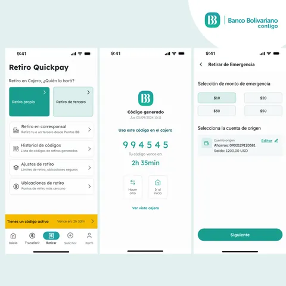

CentroHub
Banco Bolivariano identificó el retiro sin tarjeta como un proceso complejo frente a la competencia.
Banco Bolivariano identificó el retiro sin tarjeta como un proceso complejo frente a la competencia. Se realizó una investigación nacional e internacional para encontrar métodos de retiro ágiles y seguros. A partir de los hallazgos se rediseñó el flujo existente y se diseñó una funcionalidad inédita en la región: el retiro de emergencia, donde el usuario genera un código y un monto desde la app con anticipación, sin necesidad de celular ni tarjeta en el cajero. Esta solución nació de una de las principales preocupaciones de usuarios y del banco: la inseguridad al momento de realizar retiros en altas horas de la noche.
Andrés Felipe Londoño ahora
Trabajemos juntos en proyectos ganadores 🔥